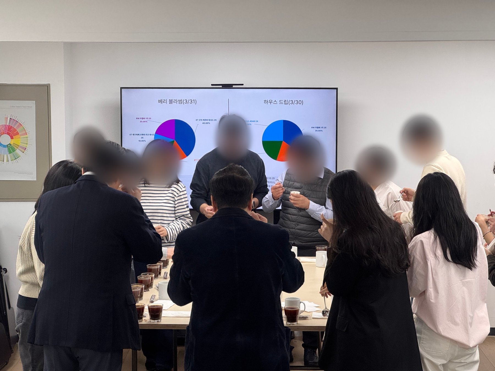

Learning & Development Consultant · McDonald’s Korea 지원
신입 온보딩, 직무 교육, 리더십 교육을 직접 설계하고 직접 진행해 왔습니다. 3인 교육팀으로 연 약 200명의 신입을 매장 약 40곳에 안착시킨 경험을, 맥도날드의 신규 출점 속도에 연결하고 싶습니다.
About
교육의 결과는 강의실이 아니라 매장에서 확인합니다. 그래서 설계하고, 직접 가르치고, 현장 데이터로 다시 고칩니다.
Selected Cases
연도별 신입 교육 인원 (명) · 교육 사이클 월 1회에서 2회로
신규 매장 확대로 신입이 연 200명 필요해졌습니다. 기존 방식으로는 교육팀이 감당할 수 없는 구조였고, 저는 회의에서 먼저 재설계를 제안했습니다.
Faster independence without lowering the standard. 빠른 사람은 마지막 교육 2~3주 뒤 독립합니다. 인원이 두 배가 되어도 품질이 흔들리지 않는 구조가 목표였습니다.
다발 감점 항목 중심의 품질·위생 교육으로 변경
교육 직후에도 QSC 감점이 반복됐습니다. 교육은 커피 맛(주관적) 중심이고 점검은 숫자 기반이라, 기준부터 어긋나 있었습니다.
Align the training standard with the inspection standard. 교육 내용을 늘린 것이 아니라, 교육과 점검의 기준을 맞춘 것이 핵심이었습니다.
경력 편차가 큰 신입을 한 명씩 코칭하고, 교육 후에도 볼 수 있는 자료를 만듭니다
직무 교육 후 점장 조사에서 두 가지가 나왔습니다. 실습 테스트의 긴장 때문에 실력을 못 보여준다는 것, 현장에는 연습할 시간과 봐줄 사람이 부족하다는 것입니다.
Learners practice more, and the results flow into data automatically. 배운 내용을 현장에서 다시 보고 연습할 수 있는 환경을 만들었습니다.
상품 누락 불만 · 2026년 1~9월
교육팀은 본사와 현장 사이의 창구입니다. 고객 불만과 호칭 문화처럼, 현장에 닿아야 풀리는 문제를 맡아 왔습니다.
Culture follows when someone shows it first. 교육에 돌아온 신입 동기들이 서로 ‘OO님’으로 부르는 모습에서 정착을 확인했습니다.

제가 운영한 교육 후 설문과 현장 피드백 중에서 · Survey responses and field feedback
여러 분야를 어떻게 하면 저희가 잘 이해할지 고민하신 흔적이 보여, 일원이 된 게 뿌듯했습니다.
Instructional design · 온보딩 서베이
자기 리더십이 오래된 방식이라는 걸 깨달았다.
Leadership program · 교육 후기
처음 접하는 회사의 이미지가, 교육과 경험으로 더욱 좋아졌습니다.
First impression · 온보딩 서베이
신입이 빨리 자리 잡으니, 가르치는 사람과 배우는 사람이 아니라 함께 가는 동료가 됐어요.
Field leader · 현장 피드백
Retrospective
온보딩 웹앱을 혼자 만들어 팀에 공유했을 때, “기획 단계부터 공유했어야 한다”는 반발이 있었습니다. 웹앱 제작과 유지보수에 돈과 시간이 많이 든다는 우려도 있었는데, 실제 비용은 0원이라 말로 설명하는 것만으로는 설득이 되지 않았습니다.
그래서 결과물을 설명하는 대신 만드는 방법을 알려 주기로 했습니다. 제작 과정을 ‘AI로 코딩하기’ 매뉴얼로 정리해 배포하자, 동료가 웹 대시보드를 만들고, 연차 높은 팀장이 매뉴얼을 따라 웹앱을 완성했습니다. 도구의 가치는 만든 사람 한 명이 아니라 함께 만들 수 있는 사람의 수에 달려 있다는 걸 배웠습니다.
Share the how, not just the what.
Retrospective · AI onboarding web app
Contact
신규 매장이 늘어도 교육이 같은 속도로 따라가도록 만들어 온 경험을, 올해 100개 이상의 신규 출점을 계획한 맥도날드에서 이어가고 싶습니다.
Thank you for reading. 면접에서 더 자세히 이야기 나누고 싶습니다.
Email me · 이메일 보내기